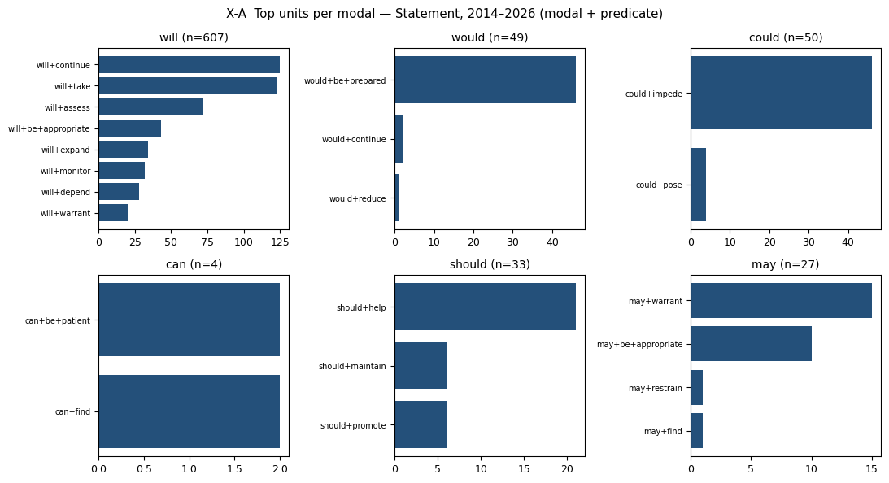
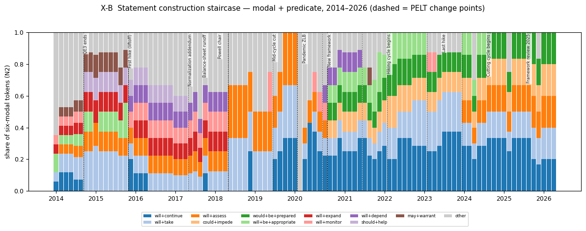
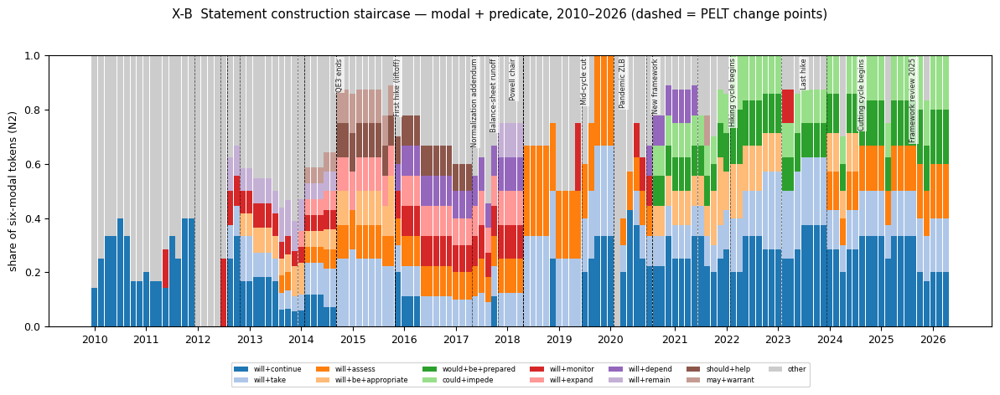
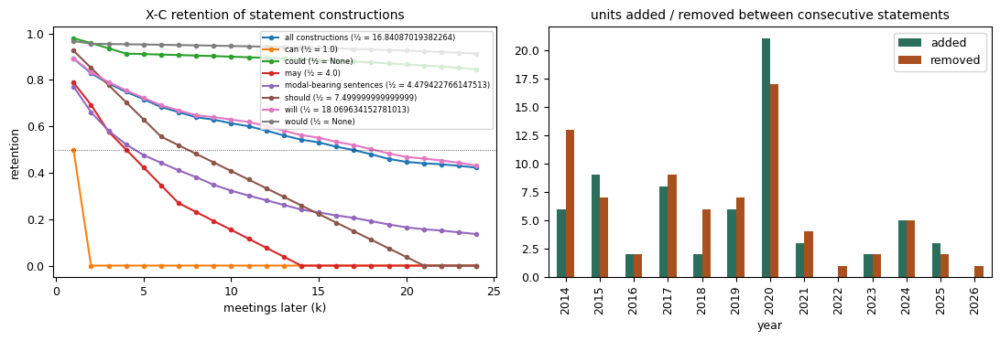
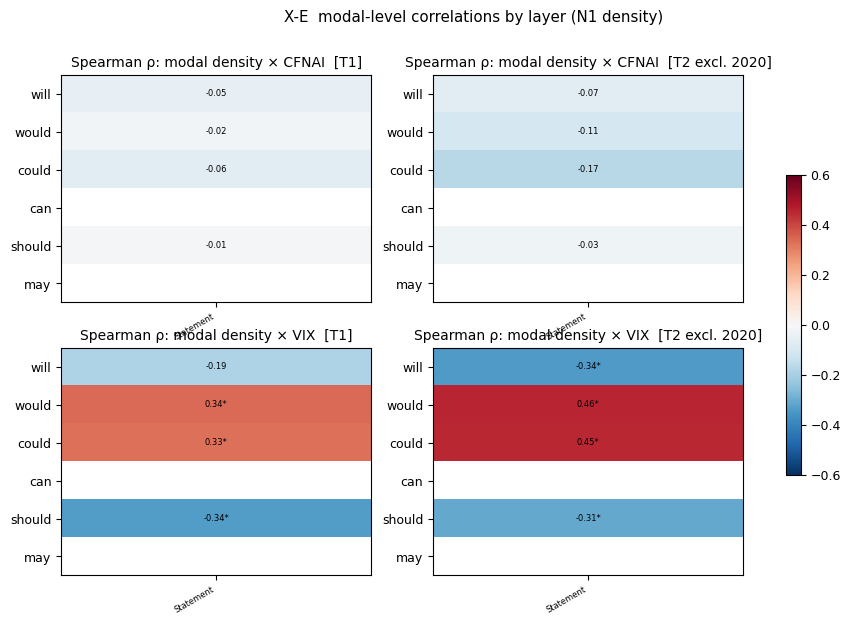
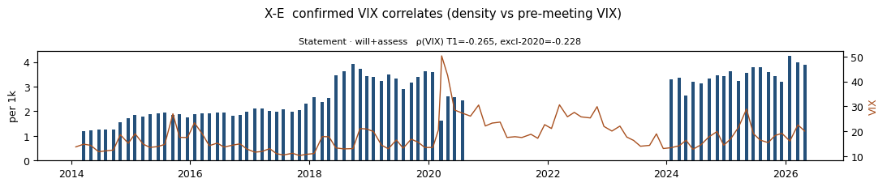
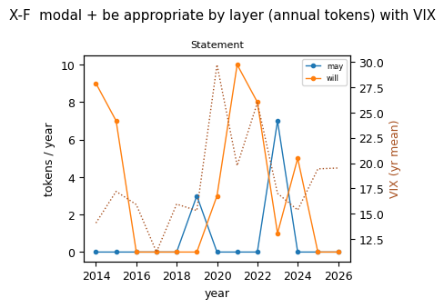

세미나 원안. 의사록 제외.
세미나 원안. 의사록 제외.
| 층위 | 문서 | 토큰 | 6대 조동사 | per 1k |
|---|---|---|---|---|
| Statement | 101 | 41,906 | 770 | 18.37 |
| 단위 | 변화점 | 전→후 점유율 | 최근접 사건 | 원인 문장 |
|---|---|---|---|---|
| will+continue | 2019-07-31 | 0.03→0.26 | Mid-cycle cut (0d) | As the Committee contemplates the future path of the target range for the federal funds rate, it will continue to monitor the implications o |
| will+take | 2014-10-29 | 0.12→0.25 | QE3 ends (0d) | This assessment will take into account a wide range of information, including measures of labor market conditions, indicators of inflation p |
| will+take | 2015-12-16 | 0.25→0.11 | First hike (liftoff) (0d) | This assessment will take into account a wide range of information, including measures of labor market conditions, indicators of inflation p |
| will+take | 2018-06-13 | 0.12→0.29 | Powell chair (128d) | This assessment will take into account a wide range of information, including measures of labor market conditions, indicators of inflation p |
| will+take | 2020-03-03 | 0.28→0.09 | Pandemic ZLB (12d) | This assessment will take into account a wide range of information, including measures of labor market conditions, indicators of inflation p |
| will+take | 2022-03-16 | 0.12→0.22 | Hiking cycle begins (0d) | The Committee's assessments will take into account a wide range of information, including readings on public health, labor market conditions |
| will+assess | 2018-06-13 | 0.12→0.29 | Powell chair (128d) | In determining the timing and size of future adjustments to the target range for the federal funds rate, the Committee will assess realized |
| will+assess | 2020-03-03 | 0.28→0.07 | Pandemic ZLB (12d) | In determining the timing and size of future adjustments to the target range for the federal funds rate, the Committee will assess realized |
| will+assess | 2024-01-31 | 0.00→0.15 | Last hike (189d) | In considering any adjustments to the target range for the federal funds rate, the Committee will carefully assess incoming data, the evolvi |
| could+impede | 2020-09-16 | 0.00→0.12 | New framework (20d) | The Committee would be prepared to adjust the stance of monetary policy as appropriate if risks emerge that could impede the attainment of t |
| would+be+prepared | 2020-09-16 | 0.00→0.12 | New framework (20d) | The Committee would be prepared to adjust the stance of monetary policy as appropriate if risks emerge that could impede the attainment of t |
| will+be+appropriate | 2015-12-16 | 0.12→0.00 | First hike (liftoff) (0d) | The Committee sees this guidance as consistent with its previous statement that it likely will be appropriate to maintain the 0 to 1/4 perce |
| will+be+appropriate | 2020-09-16 | 0.00→0.12 | New framework (20d) | The Committee decided to keep the target range for the federal funds rate at 0 to 1/4 percent and expects it will be appropriate to maintain |
| will+be+appropriate | 2023-03-22 | 0.17→0.02 | Last hike (126d) | In support of these goals, the Committee decided to raise the target range for the federal funds rate to 1/4 to 1/2 percent and anticipates |
| will+expand | 2018-06-13 | 0.12→0.00 | Powell chair (128d) | The Committee continues to expect that, with gradual adjustments in the stance of monetary policy, economic activity will expand at a modera |
| will+monitor | 2015-12-16 | 0.00→0.11 | First hike (liftoff) (0d) | In light of the current shortfall of inflation from 2 percent, the Committee will carefully monitor actual and expected progress toward its |
| will+monitor | 2018-06-13 | 0.12→0.00 | Powell chair (128d) | The Committee will carefully monitor actual and expected inflation developments relative to its symmetric inflation goal. |
| will+depend | 2015-12-16 | 0.00→0.11 | First hike (liftoff) (0d) | However, the actual path of the federal funds rate will depend on the economic outlook as informed by incoming data. |
| will+depend | 2018-06-13 | 0.12→0.00 | Powell chair (128d) | However, the actual path of the federal funds rate will depend on the economic outlook as informed by incoming data. |
| will+depend | 2020-07-29 | 0.00→0.12 | New framework (29d) | The path of the economy will depend significantly on the course of the virus. |
| will+depend | 2021-07-28 | 0.12→0.00 | Hiking cycle begins (231d) | The path of the economy will depend significantly on the course of the virus. |
| should+help | 2014-10-29 | 0.00→0.12 | QE3 ends (0d) | This policy, by keeping the Committee's holdings of longer-term securities at sizable levels, should help maintain accommodative financial c |
| should+help | 2017-06-14 | 0.11→0.00 | Normalization addendum (0d) | This policy, by keeping the Committee's holdings of longer-term securities at sizable levels, should help maintain accommodative financial c |
| may+warrant | 2014-10-29 | 0.05→0.12 | QE3 ends (0d) | The Committee currently anticipates that, even after employment and inflation are near mandate-consistent levels, economic conditions may, f |
| may+warrant | 2015-12-16 | 0.12→0.00 | First hike (liftoff) (0d) | The Committee currently anticipates that, even after employment and inflation are near mandate-consistent levels, economic conditions may, f |
| 층위 | 단위 | 거시 | ρ T1 | ρ excl-2020 | ρ 2010– | ρ 2014–19 | ρ 2021–26 | 토큰 |
|---|---|---|---|---|---|---|---|---|
| statement | will+assess | vix | -0.265 | -0.228 | -0.321 | -0.071 | -0.265 | 72 |
| 층위 | 단위 | 토큰 | ρ VIX T1 | ρ VIX excl-2020 | ρ CFNAI T1 | 제로 비율 T1 |
|---|---|---|---|---|---|---|
| statement | may+be+appropriate | 10 | -0.077 (p=0.4419) | -0.037 (p=0.7308) | -0.216 | 0.9 |
| statement | will+be+appropriate | 43 | 0.235 (p=0.018) | 0.287 (p=0.0058) | 0.364 | 0.61 |







| period | layer | label | n_docs | tokens | six_modal_tokens | per_1k |
|---|---|---|---|---|---|---|
| T1 | statement | Statement | 101 | 41906 | 770 | 18.37 |
| T2 | statement | Statement | 91 | 37819 | 697 | 18.43 |
| T3 | statement | Statement | 133 | 57065 | 1007 | 17.65 |
| unit | break_date | share_before | share_after | direction | nearest_event | days_to_event | sentence_after | sentence_before |
|---|---|---|---|---|---|---|---|---|
| will+continue | 2019-07-31 | 0.031 | 0.260 | up | Mid-cycle cut | 0 | As the Committee contemplates the future path of the target range for the federal funds rate, it will continue to monitor the implications of incoming information for the economic outlook and will act as appropriate to s | |
| will+take | 2014-10-29 | 0.116 | 0.251 | up | QE3 ends | 0 | This assessment will take into account a wide range of information, including measures of labor market conditions, indicators of inflation pressures and inflation expectations, and readings on financial developments. | |
| will+take | 2015-12-16 | 0.248 | 0.110 | down | First hike (liftoff) | 0 | This assessment will take into account a wide range of information, including measures of labor market conditions, indicators of inflation pressures and inflation expectations, and readings on financial developments. | |
| will+take | 2018-06-13 | 0.117 | 0.292 | up | Powell chair | 128 | This assessment will take into account a wide range of information, including measures of labor market conditions, indicators of inflation pressures and inflation expectations, and readings on financial and international | |
| will+take | 2020-03-03 | 0.275 | 0.085 | down | Pandemic ZLB | 12 | This assessment will take into account a wide range of information, including measures of labor market conditions, indicators of inflation pressures and inflation expectations, and readings on financial and international | |
| will+take | 2022-03-16 | 0.119 | 0.220 | up | Hiking cycle begins | 0 | The Committee's assessments will take into account a wide range of information, including readings on public health, labor market conditions, inflation pressures and inflation expectations, and financial and internationa | |
| will+assess | 2018-06-13 | 0.117 | 0.292 | up | Powell chair | 128 | In determining the timing and size of future adjustments to the target range for the federal funds rate, the Committee will assess realized and expected economic conditions relative to its maximum employment objective an | |
| will+assess | 2020-03-03 | 0.275 | 0.075 | down | Pandemic ZLB | 12 | In determining the timing and size of future adjustments to the target range for the federal funds rate, the Committee will assess realized and expected economic conditions relative to its maximum employment objective an | |
| will+assess | 2024-01-31 | 0.000 | 0.146 | up | Last hike | 189 | In considering any adjustments to the target range for the federal funds rate, the Committee will carefully assess incoming data, the evolving outlook, and the balance of risks. | |
| could+impede | 2020-09-16 | 0.000 | 0.116 | up | New framework | 20 | The Committee would be prepared to adjust the stance of monetary policy as appropriate if risks emerge that could impede the attainment of the Committee's goals. | |
| would+be+prepared | 2020-09-16 | 0.000 | 0.116 | up | New framework | 20 | The Committee would be prepared to adjust the stance of monetary policy as appropriate if risks emerge that could impede the attainment of the Committee's goals. | |
| will+be+appropriate | 2015-12-16 | 0.120 | 0.000 | down | First hike (liftoff) | 0 | The Committee sees this guidance as consistent with its previous statement that it likely will be appropriate to maintain the 0 to 1/4 percent target range for the federal funds rate for a considerable time following the | |
| will+be+appropriate | 2020-09-16 | 0.000 | 0.116 | up | New framework | 20 | The Committee decided to keep the target range for the federal funds rate at 0 to 1/4 percent and expects it will be appropriate to maintain this target range until labor market conditions have reached levels consistent | |
| will+be+appropriate | 2023-03-22 | 0.166 | 0.018 | down | Last hike | 126 | In support of these goals, the Committee decided to raise the target range for the federal funds rate to 1/4 to 1/2 percent and anticipates that ongoing increases in the target range will be appropriate. | |
| will+expand | 2018-06-13 | 0.117 | 0.000 | down | Powell chair | 128 | The Committee continues to expect that, with gradual adjustments in the stance of monetary policy, economic activity will expand at a moderate pace, and labor market conditions will strengthen somewhat further. | |
| will+monitor | 2015-12-16 | 0.000 | 0.110 | up | First hike (liftoff) | 0 | In light of the current shortfall of inflation from 2 percent, the Committee will carefully monitor actual and expected progress toward its inflation goal. | |
| will+monitor | 2018-06-13 | 0.117 | 0.000 | down | Powell chair | 128 | The Committee will carefully monitor actual and expected inflation developments relative to its symmetric inflation goal. | |
| will+depend | 2015-12-16 | 0.000 | 0.110 | up | First hike (liftoff) | 0 | However, the actual path of the federal funds rate will depend on the economic outlook as informed by incoming data. | |
| will+depend | 2018-06-13 | 0.117 | 0.000 | down | Powell chair | 128 | However, the actual path of the federal funds rate will depend on the economic outlook as informed by incoming data. | |
| will+depend | 2020-07-29 | 0.000 | 0.116 | up | New framework | 29 | The path of the economy will depend significantly on the course of the virus. | |
| will+depend | 2021-07-28 | 0.116 | 0.000 | down | Hiking cycle begins | 231 | The path of the economy will depend significantly on the course of the virus. | |
| should+help | 2014-10-29 | 0.000 | 0.125 | up | QE3 ends | 0 | This policy, by keeping the Committee's holdings of longer-term securities at sizable levels, should help maintain accommodative financial conditions. | |
| should+help | 2017-06-14 | 0.107 | 0.000 | down | Normalization addendum | 0 | This policy, by keeping the Committee's holdings of longer-term securities at sizable levels, should help maintain accommodative financial conditions. | |
| may+warrant | 2014-10-29 | 0.053 | 0.125 | up | QE3 ends | 0 | The Committee currently anticipates that, even after employment and inflation are near mandate-consistent levels, economic conditions may, for some time, warrant keeping the target federal funds rate below levels the Com | |
| may+warrant | 2015-12-16 | 0.124 | 0.000 | down | First hike (liftoff) | 0 | The Committee currently anticipates that, even after employment and inflation are near mandate-consistent levels, economic conditions may, for some time, warrant keeping the target federal funds rate below levels the Com |
| layer | will_n | would_n | could_n | can_n | should_n | may_n | will_per1k | would_per1k | could_per1k | can_per1k | should_per1k | may_per1k | tokens |
|---|---|---|---|---|---|---|---|---|---|---|---|---|---|
| statement | 607 | 49 | 50 | 4 | 33 | 27 | 14.48 | 1.17 | 1.19 | 0.1 | 0.79 | 0.64 | 41906 |
| layer | modal | n | neg | question | cond | reported | contracted | subj_we_I | subj_person | subj_committee_fed | subj_econ | passive | perfect |
|---|---|---|---|---|---|---|---|---|---|---|---|---|---|
| statement | could | 50 | 0.0 | 0.0 | 0.920 | 0.080 | 0.0 | 0.0 | 0.0 | 0.000 | 0.080 | 0.000 | 0.0 |
| statement | will | 607 | 0.0 | 0.0 | 0.041 | 0.234 | 0.0 | 0.0 | 0.0 | 0.463 | 0.227 | 0.002 | 0.0 |
| statement | would | 49 | 0.0 | 0.0 | 0.939 | 0.041 | 0.0 | 0.0 | 0.0 | 0.939 | 0.000 | 0.000 | 0.0 |
| level | key | period | macro | n | r | p_r | rho | p_rho | q_rho |
|---|---|---|---|---|---|---|---|---|---|
| genre | statement | T1 | cfnai | 101 | -0.057 | 0.569 | -0.124 | 0.216 | 0.905 |
| genre | statement | T1 | vix | 101 | 0.009 | 0.932 | 0.061 | 0.542 | 0.542 |
| genre | statement | T2 | cfnai | 91 | -0.136 | 0.200 | -0.178 | 0.091 | 0.282 |
| genre | statement | T2 | vix | 91 | 0.070 | 0.510 | 0.045 | 0.673 | 0.673 |
| genre | statement | T3 | cfnai | 133 | -0.056 | 0.526 | -0.096 | 0.270 | 0.910 |
| genre | statement | T3 | vix | 133 | -0.117 | 0.178 | -0.116 | 0.185 | 0.185 |
| genre | statement | H1 | cfnai | 48 | 0.157 | 0.285 | 0.175 | 0.235 | 0.562 |
| genre | statement | H1 | vix | 48 | -0.282 | 0.053 | -0.405 | 0.004 | 0.011 |
| genre | statement | H2 | cfnai | 43 | -0.505 | 0.000 | -0.518 | 0.000 | 0.002 |
| genre | statement | H2 | vix | 43 | -0.421 | 0.005 | -0.472 | 0.001 | 0.006 |
| layer | statement | T1 | cfnai | 101 | -0.057 | 0.569 | -0.124 | 0.216 | 0.905 |
| layer | statement | T1 | vix | 101 | 0.009 | 0.932 | 0.061 | 0.542 | 0.542 |
| layer | statement | T2 | cfnai | 91 | -0.136 | 0.200 | -0.178 | 0.091 | 0.282 |
| layer | statement | T2 | vix | 91 | 0.070 | 0.510 | 0.045 | 0.673 | 0.673 |
| layer | statement | T3 | cfnai | 133 | -0.056 | 0.526 | -0.096 | 0.270 | 0.910 |
| layer | statement | T3 | vix | 133 | -0.117 | 0.178 | -0.116 | 0.185 | 0.185 |
| layer | statement | H1 | cfnai | 48 | 0.157 | 0.285 | 0.175 | 0.235 | 0.562 |
| layer | statement | H1 | vix | 48 | -0.282 | 0.053 | -0.405 | 0.004 | 0.011 |
| layer | statement | H2 | cfnai | 43 | -0.505 | 0.000 | -0.518 | 0.000 | 0.002 |
| layer | statement | H2 | vix | 43 | -0.421 | 0.005 | -0.472 | 0.001 | 0.006 |
| level | key | unit | macro | rho_T1 | p_T1 | rho_T2 | p_T2 | rho_T3 | rho_H1 | rho_H2 | n_tokens_T1 | zero_share_T1 | T1_only | era_composition | confirmed | unit_level |
|---|---|---|---|---|---|---|---|---|---|---|---|---|---|---|---|---|
| genre | statement | will+assess | vix | -0.265 | 0.0073 | -0.228 | 0.0298 | -0.321 | -0.071 | -0.265 | 72 | 0.287 | False | False | True | U2 |
| layer | statement | will+assess | vix | -0.265 | 0.0073 | -0.228 | 0.0298 | -0.321 | -0.071 | -0.265 | 72 | 0.287 | False | False | True | U2 |
| genre | statement | could+impede | vix | 0.359 | 0.0002 | 0.474 | 0.0000 | 0.247 | -0.012 | 46 | 0.545 | True | True | False | U2 | |
| genre | statement | would+be+prepared | vix | 0.359 | 0.0002 | 0.474 | 0.0000 | 0.247 | -0.012 | 46 | 0.545 | True | True | False | U2 | |
| layer | statement | could+impede | vix | 0.359 | 0.0002 | 0.474 | 0.0000 | 0.247 | -0.012 | 46 | 0.545 | True | True | False | U2 | |
| layer | statement | would+be+prepared | vix | 0.359 | 0.0002 | 0.474 | 0.0000 | 0.247 | -0.012 | 46 | 0.545 | True | True | False | U2 | |
| genre | statement | would | vix | 0.338 | 0.0005 | 0.455 | 0.0000 | 0.221 | -0.216 | -0.048 | 49 | 0.535 | True | True | False | modal |
| layer | statement | would | vix | 0.338 | 0.0005 | 0.455 | 0.0000 | 0.221 | -0.216 | -0.048 | 49 | 0.535 | True | True | False | modal |
| genre | statement | could | vix | 0.332 | 0.0007 | 0.451 | 0.0000 | 0.182 | -0.083 | -0.012 | 50 | 0.505 | True | True | False | modal |
| layer | statement | could | vix | 0.332 | 0.0007 | 0.451 | 0.0000 | 0.182 | -0.083 | -0.012 | 50 | 0.505 | True | True | False | modal |
| genre | statement | will+continue | vix | 0.408 | 0.0000 | 0.395 | 0.0001 | 0.375 | 0.081 | -0.325 | 125 | 0.327 | True | True | False | U2 |
| layer | statement | will+continue | vix | 0.408 | 0.0000 | 0.395 | 0.0001 | 0.375 | 0.081 | -0.325 | 125 | 0.327 | True | True | False | U2 |
| genre | statement | will+assess | cfnai | -0.356 | 0.0003 | -0.298 | 0.0041 | -0.251 | 0.006 | -0.434 | 72 | 0.287 | True | True | False | U2 |
| layer | statement | will+assess | cfnai | -0.356 | 0.0003 | -0.298 | 0.0041 | -0.251 | 0.006 | -0.434 | 72 | 0.287 | True | True | False | U2 |
| genre | statement | will+take | cfnai | -0.221 | 0.0261 | -0.244 | 0.0197 | -0.125 | 0.088 | -0.474 | 123 | 0.020 | True | True | False | U2 |
| layer | statement | will+take | cfnai | -0.221 | 0.0261 | -0.244 | 0.0197 | -0.125 | 0.088 | -0.474 | 123 | 0.020 | True | True | False | U2 |
| layer | unit | n_tokens | rho_cfnai_T1 | rho_cfnai_T2 | rho_cfnai_T3 | rho_vix_T1 | p_vix_T1 | rho_vix_T2 | p_vix_T2 | rho_vix_T3 | hac_b_vix_T1 | hac_p_vix_T1 | hac_b_vix_T2 | hac_p_vix_T2 | hac_b_cfnai_T2 | hac_p_cfnai_T2 | zero_T1 |
|---|---|---|---|---|---|---|---|---|---|---|---|---|---|---|---|---|---|
| statement | ALL | 770 | -0.124 | -0.178 | -0.096 | 0.061 | 0.542 | 0.045 | 0.673 | -0.116 | 0.002 | 0.974 | 0.083 | 0.308 | -2.564 | 0.262 | 0.00 |
| statement | will+continue | 125 | -0.164 | -0.180 | -0.146 | 0.408 | 0.000 | 0.395 | 0.000 | 0.375 | 0.148 | 0.005 | 0.245 | 0.000 | -2.094 | 0.288 | 0.33 |
| statement | will+take | 123 | -0.221 | -0.244 | -0.125 | 0.101 | 0.315 | 0.272 | 0.009 | -0.111 | -0.017 | 0.617 | 0.080 | 0.010 | -1.908 | 0.003 | 0.02 |
| statement | will+assess | 72 | -0.356 | -0.298 | -0.251 | -0.265 | 0.007 | -0.228 | 0.030 | -0.321 | -0.052 | 0.056 | -0.066 | 0.110 | -2.094 | 0.005 | 0.29 |
| statement | could+impede | 46 | -0.077 | -0.181 | -0.021 | 0.359 | 0.000 | 0.474 | 0.000 | 0.247 | 0.050 | 0.302 | 0.175 | 0.000 | -1.239 | 0.202 | 0.54 |
| statement | would+be+prepared | 46 | -0.077 | -0.181 | -0.021 | 0.359 | 0.000 | 0.474 | 0.000 | 0.247 | 0.050 | 0.302 | 0.175 | 0.000 | -1.239 | 0.202 | 0.54 |
| statement | will+be+appropriate | 43 | 0.364 | 0.295 | 0.320 | 0.235 | 0.018 | 0.287 | 0.006 | 0.057 | 0.039 | 0.309 | 0.096 | 0.028 | 1.386 | 0.022 | 0.61 |
| statement | will+monitor | 32 | -0.053 | 0.052 | -0.115 | -0.296 | 0.003 | -0.411 | 0.000 | -0.350 | -0.027 | 0.234 | -0.074 | 0.007 | 0.122 | 0.816 | 0.68 |
| statement | may+be+appropriate | 10 | -0.216 | -0.248 | -0.191 | -0.077 | 0.442 | -0.037 | 0.731 | -0.094 | -0.015 | 0.161 | -0.005 | 0.725 | -0.909 | 0.062 | 0.90 |
| layer | unit | n_tokens | rho_cfnai_T1 | p_cfnai_T1 | rho_vix_T1 | p_vix_T1 | zero_T1 | rho_cfnai_T2 | p_cfnai_T2 | rho_vix_T2 | p_vix_T2 | zero_T2 |
|---|---|---|---|---|---|---|---|---|---|---|---|---|
| statement | may+be+appropriate | 10 | -0.216 | 0.03 | -0.077 | 0.442 | 0.90 | -0.248 | 0.018 | -0.037 | 0.731 | 0.89 |
| statement | will+be+appropriate | 43 | 0.364 | 0.00 | 0.235 | 0.018 | 0.61 | 0.295 | 0.004 | 0.287 | 0.006 | 0.60 |
| key | unit | period | macro | p_text_to_macro | p_macro_to_text | n | q_text_to_macro | q_macro_to_text |
|---|---|---|---|---|---|---|---|---|
| statement | will | T1 | cfnai | 0.011 | 0.008 | 101 | 0.385 | 0.056 |
| statement | ALL | T1 | cfnai | 0.055 | 0.144 | 101 | 0.395 | 0.471 |
| statement | ALL | T1 | vix | 0.051 | 0.025 | 101 | 0.395 | 0.112 |
| statement | will+take | T1 | cfnai | 0.038 | 0.724 | 101 | 0.395 | 0.916 |
| statement | will | T2 | vix | 0.034 | 0.744 | 91 | 0.395 | 0.916 |
| statement | will+take | T2 | cfnai | 0.077 | 0.628 | 91 | 0.450 | 0.916 |
| statement | could+impede | T2 | vix | 0.100 | 0.848 | 91 | 0.450 | 0.954 |
| statement | would+be+prepared | T2 | vix | 0.100 | 0.848 | 91 | 0.450 | 0.954 |
| statement | will | T1 | vix | 0.153 | 0.314 | 101 | 0.501 | 0.754 |
| statement | ALL | T2 | vix | 0.160 | 0.462 | 91 | 0.501 | 0.863 |
| statement | could | T2 | vix | 0.152 | 0.731 | 91 | 0.501 | 0.916 |
| statement | will+continue | T2 | vix | 0.167 | 0.117 | 91 | 0.501 | 0.420 |
| statement | could+impede | T1 | cfnai | 0.341 | 0.000 | 101 | 0.660 | 0.002 |
| statement | would+be+prepared | T1 | cfnai | 0.341 | 0.000 | 101 | 0.660 | 0.002 |
| statement | could+impede | T2 | cfnai | 0.368 | 0.940 | 91 | 0.660 | 0.995 |
| statement | could | T2 | cfnai | 0.373 | 0.684 | 91 | 0.660 | 0.916 |
| statement | would | T2 | vix | 0.362 | 0.764 | 91 | 0.660 | 0.916 |
| statement | could | T1 | cfnai | 0.385 | 0.000 | 101 | 0.660 | 0.002 |
| statement | would+be+prepared | T2 | cfnai | 0.368 | 0.940 | 91 | 0.660 | 0.995 |
| statement | will+continue | T1 | cfnai | 0.334 | 0.989 | 101 | 0.660 | 0.997 |
| statement | will+continue | T2 | cfnai | 0.309 | 0.619 | 91 | 0.660 | 0.916 |
| statement | ALL | T2 | cfnai | 0.408 | 0.281 | 91 | 0.667 | 0.754 |
| statement | will | T2 | cfnai | 0.488 | 0.527 | 91 | 0.756 | 0.863 |
| statement | would | T2 | cfnai | 0.504 | 0.493 | 91 | 0.756 | 0.863 |
| statement | will+continue | T1 | vix | 0.545 | 0.011 | 101 | 0.784 | 0.067 |
| statement | would | T1 | cfnai | 0.632 | 0.022 | 101 | 0.824 | 0.112 |
| statement | could | T1 | vix | 0.659 | 0.416 | 101 | 0.824 | 0.863 |
| statement | could+impede | T1 | vix | 0.664 | 0.448 | 101 | 0.824 | 0.863 |
| statement | would+be+prepared | T1 | vix | 0.664 | 0.448 | 101 | 0.824 | 0.863 |
| statement | will+assess | T2 | cfnai | 0.692 | 0.997 | 91 | 0.831 | 0.997 |
| statement | will+assess | T1 | cfnai | 0.737 | 0.007 | 101 | 0.856 | 0.056 |
| statement | will+assess | T1 | vix | 0.784 | 0.295 | 101 | 0.882 | 0.754 |
| statement | will+take | T2 | vix | 0.871 | 0.086 | 91 | 0.907 | 0.344 |
| statement | would | T1 | vix | 0.882 | 0.661 | 101 | 0.907 | 0.916 |
| statement | will+assess | T2 | vix | 0.843 | 0.505 | 91 | 0.907 | 0.863 |
| statement | will+take | T1 | vix | 0.926 | 0.231 | 101 | 0.926 | 0.692 |